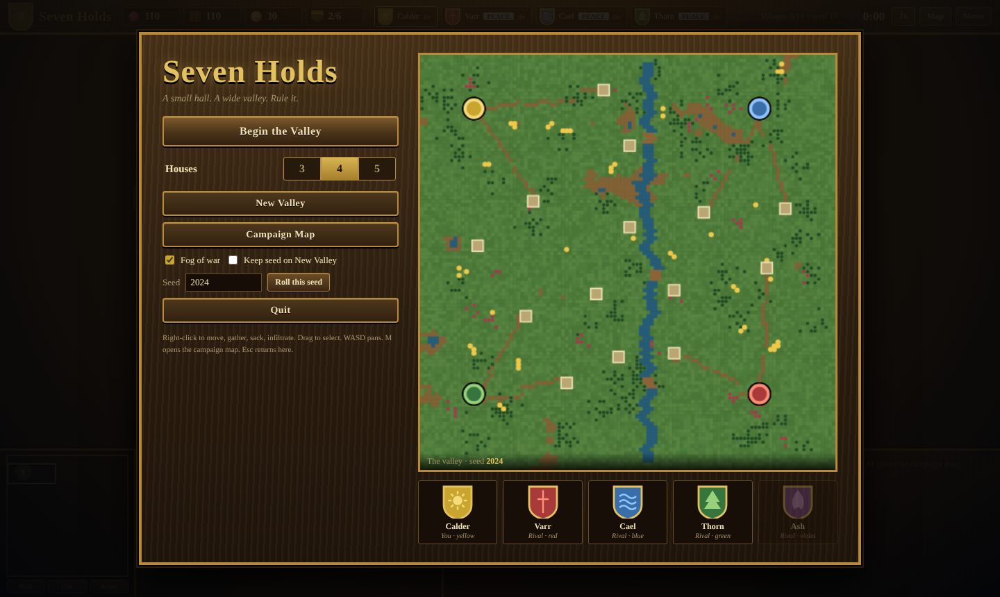
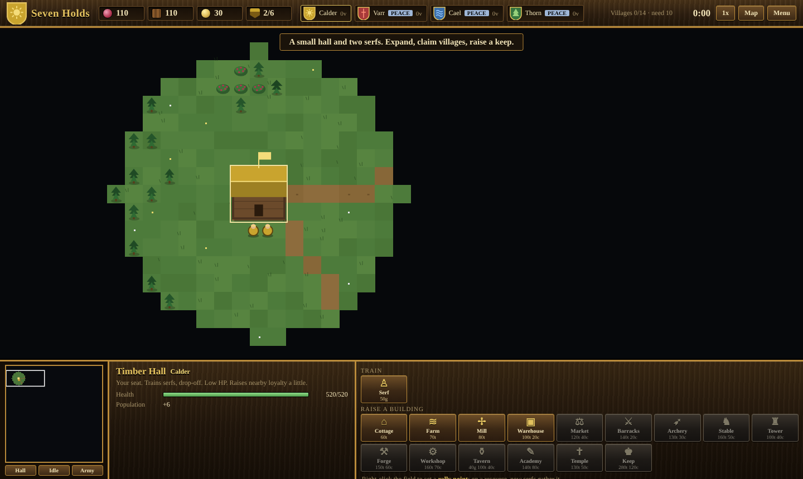
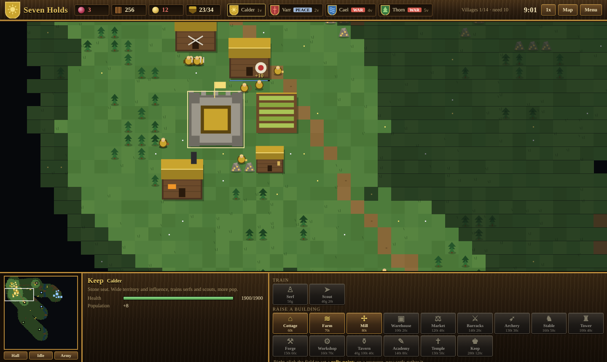
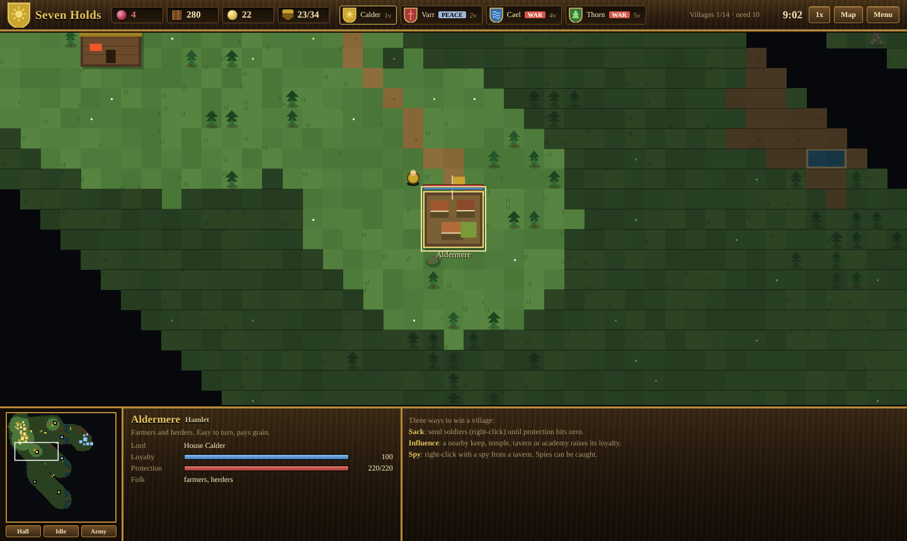
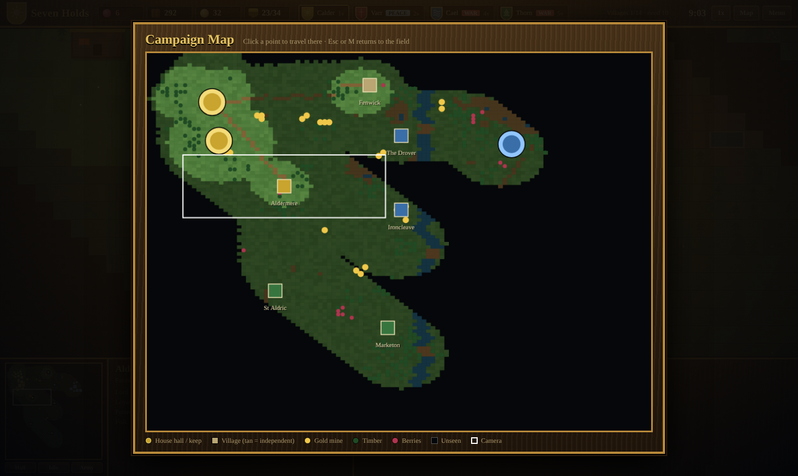
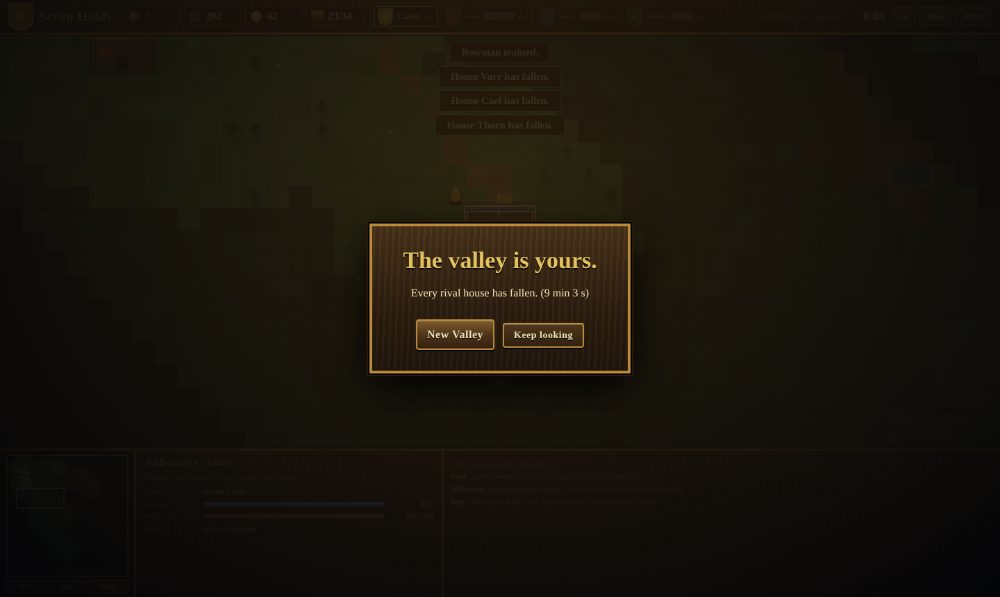
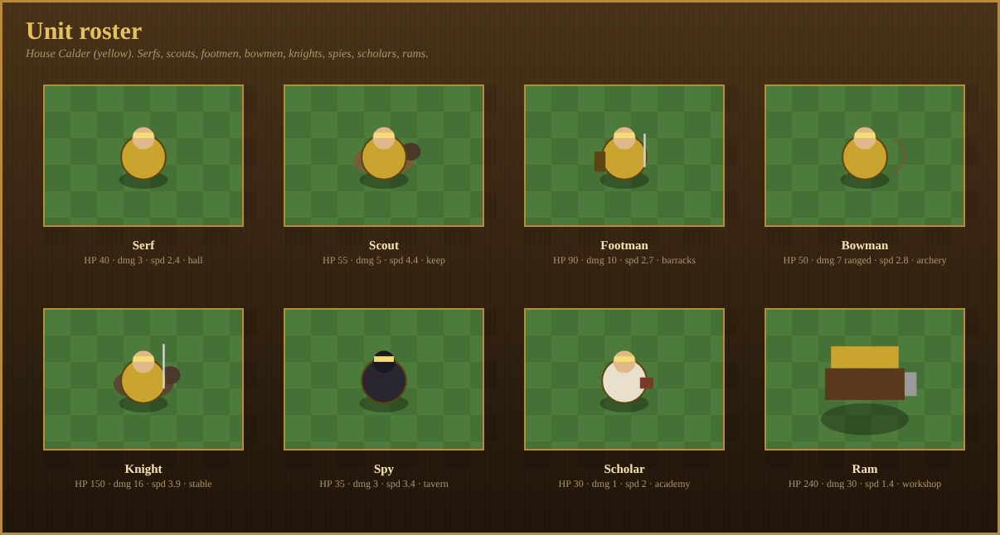
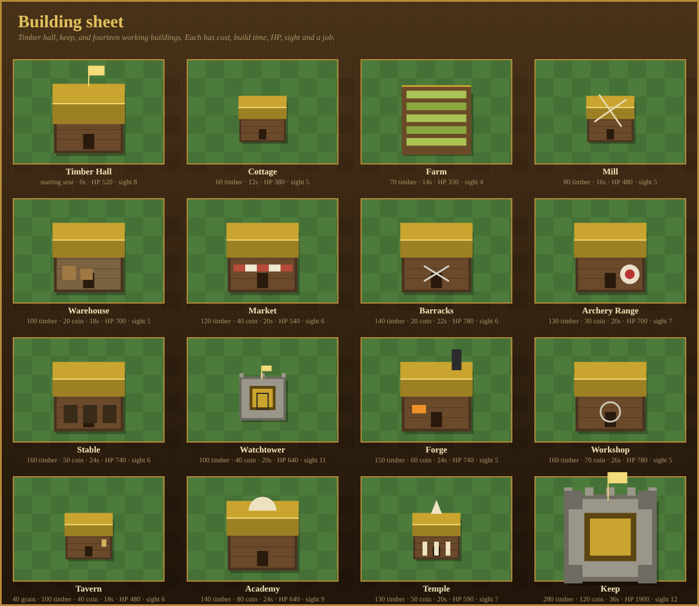
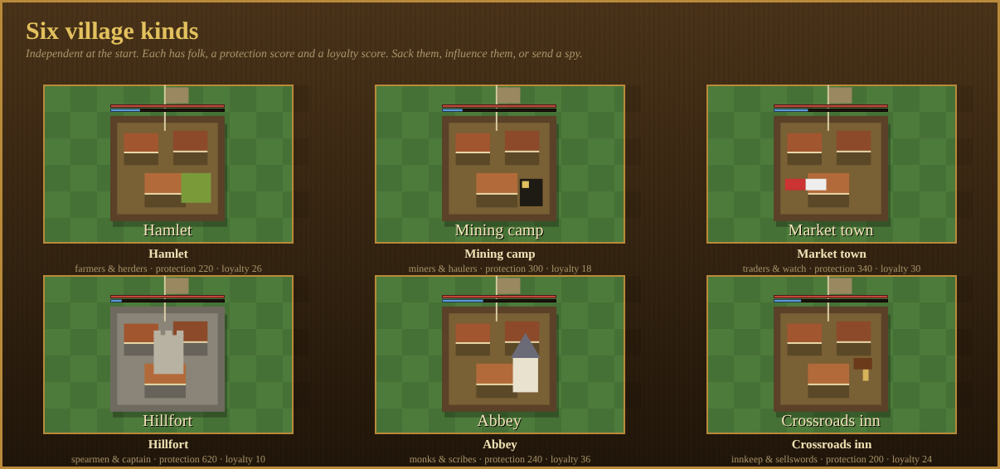
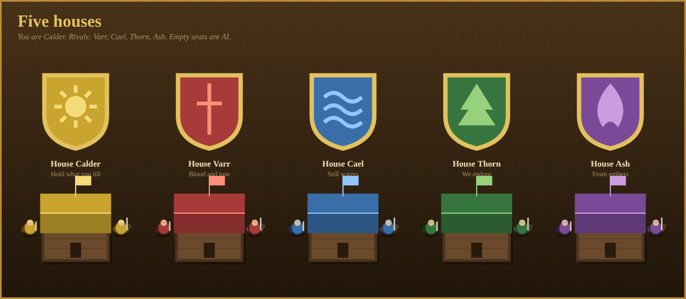

Target look: Age of Empires II chrome. Dark wood panels, gold type, grass, river, dirt paths. Play the game
Captured from the running game

MenuTitle, subtitle, buttons, house count 3 / 4 / 5, seed, fog toggle, vale preview and the five house crests.

The small startOne timber hall, two serfs, a little grain, timber and coin, and a lot of empty meadow under fog.

After expansionKeep, farm, mill, barracks, forge, archery range; train and build buttons in the bottom HUD; the minimap shows what the house has explored.

A village selectedName, folk, lord, loyalty and protection. Red bar over the walls is protection, blue is loyalty.

Campaign mapThe whole valley under fog, house discs, villages, mines, timber and berries, with the white camera rectangle. Click to travel.

VictoryLast house standing, or hold 65% of the villages for 45 seconds.
Art sheets (drawn by the game's own renderer)

Unit rosterSerf, scout, footman, bowman, knight, spy, scholar, ram.

Building sheetHall, keep and fourteen working buildings with cost, time, HP and sight.

Six village kindsHamlet, mining camp, market town, hillfort, abbey, crossroads inn.

Five housesCalder (yellow), Varr (red), Cael (blue), Thorn (green), Ash (violet).